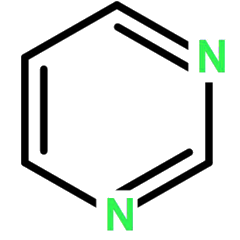

pyrimidine: a universal framework for genetic algorithm¶
It is a highly object-oriental implement of genetic algorithm by Python.

Why¶
Why is the package named as “pyrimidine”? Because it begins with “py”.
— Are you kiding?
— No, I am serious.
Download¶
It has been uploaded to pypi, so download it with pip install pyrimidine, and also could download it from github.
Idea of algebra-inspired¶
We view the population as a container of individuals, each individual as a container of chromosomes, and a chromosome as a container (array) of genes. This container could be represented as a list or an array. The Container class has an attribute element_class, which specifies the class of the elements within it.
Mathematically, we denote a container of elements of type A as follows:
s = {a:A}:S <==> s: S[A]
Now we give the following definition:
A population is a container of individuals (or chromosomes);
An individual is a container of chromosomes;
A multi-population is a container of populations;
Below is the partial source code for BaseIndividual and BasePopulation.
class BaseIndividual(FitnessMixin, metaclass=MetaContainer):
element_class = BaseChromosome
default_size = 1
class BasePopulation(FitnessMixin, metaclass=MetaHighContainer):
element_class = BaseIndividual
default_size = 20
where FitnessMixin is a mixin, representing a iterative algorithm with fitness.
There are mainly two kinds of containers: list and tuple as in programming language Haskell. See following examples.
# individual with chromosomes of type _Chromosome
_Individual1 = BaseIndividual[_Choromosome]
# individual with 20 chromosomes of type _Chromosome
_Individual1 = BaseIndividual[_Choromosome] // 20
# individual with 2 chromosomes of type _Chromosome1 and _Chromosome2 respectively
_Individual2 = MixedIndividual[_Chromosome1, _Chromosome2]
A population can also serve as a container of chromosomes, particularly in scenarios where an individual possesses only a single chromosome.
In essence, a container - and by extension, a population in genetic algorithms - is regarded as a distinctive algebraic system. This perspective leads us to refer to it as an “algebra-inspired” design.
Fitness¶
This is how we compute fitness. The method _fitness is responsible for the underlying computation. The attribute fitness further encapsulates _fitness. If caching is enabled, it will first read from the cache; if not, it will call _fitness.
It is recommended to add the @fitness_cache decorator to individuals. If the individual has not changed, then it can reduce computation and improve algorithm efficiency, otherwise it should re-compute fitness. The shortage is that you have to add @side_effect to the methods which have side effect, namly changing the fitness of the individual.
Unlike the cache class decorator, the memory decorator (e.g., @basic_memory) will change the algorithm’s behavior. It stores the best results during the individual’s changes. fitness will first read from memory. Memory itself also has a caching effect, so if you add the memory decorator, there is no need to add the cache decorator.
Statement of need¶
As one of the earliest developed optimization algorithms, the genetic algorithm (GA) has found extensive application across various domains and has undergone modifications and integrations with new algorithms. The principles of GA will not be reviewed here. For a detailed understanding, please refer to references and the associated literatures.
In a typical Python implementation, populations are initially defined as lists of individuals, with each individual represented by a chromosome composed of a list of genes. Creating an individual can be achieved utilizing either the standard library’s array or the widely-used third-party library numpy. The evolutionary operators are defined and applied to these structures.
A concise comparison between pyrimidine and other frameworks is provided in the following table, such as DEAP and gaft, which have significantly influenced the design of pyrimidine.
Library |
Design Style |
Versatility |
Extensibility |
Visualization |
|---|---|---|---|---|
|
OOP, Meta-programming, Algebra-insprited |
Universal |
Extensible |
export the data in |
|
OOP, Functional, Meta-programming |
Universal |
Limited by its philosophy |
export the data in the class |
|
OOP, decoration pattern |
Universal |
Extensible |
Easy to Implement |
based on |
Symbolic Regression |
Limited |
- |
|
scikit-learn Style |
Hyperparameter Optimization |
Limited |
- |
|
scikit-learn Style |
Symbolic Regression |
Limited |
- |
|
scikit-learn Style |
Numerical Optimization |
Unextensible |
Encapsulated as a data frame |
|
scikit-learn Style |
Numerical Optimization |
Very Limited |
provide some plotting function |
|
OOP |
Neuroevolution |
Limited |
use the visualization tools |
: Comparison of the popular genetic algorithm frameworks.
Tpot/gama, gplearn/pysr, and scikit-opt follow the scikit-learn style, providing fixed APIs with limited extensibility. They are merely serving their respective fields effectively (as well as NEAT).
DEAP is feature-rich and mature. However, it primarily adopts a tedious meta-programming style. Some parts of the source code lack sufficient decoupling, limiting its extensibility. Gaft is a highly object-oriented software with excellent scalability, but is currently inactive.
Pyrimidine fully utilizes the OOP and meta-programming capabilities of Python, making the design of the APIs and the extension of the program more natural. So far, we have implemented a variety of optimization algorithms by pyrimidine, including adaptive GA, quantum GA, differential evolution, evolutionary programming, particle swarm optimization, as well as some local search algorithms, such as simulated annealing.
To meet diverse demands, it provides enough encoding schemes for solutions to optimization problems, including Boolean, integer, real number types and their hybrid forms.
References(part)¶
Holland, J. Adaptation in Natural and Artificial Systems. The Univ. of Michigan, 1975. DOI: 10.7551/mitpress/1090.001.0001.
Simon, D. Evolutionary Optimization Algorithms: Biologically Inspired and Population - Based Approaches to Computer Intelligence. John Wiley & Sons, 2013. URL: https://api.semanticscholar.org/CorpusID:60429433.
Katoch, S., Chauhan, S. S., & Kumar, V. A review on genetic algorithm: past, present, and future. Multimed Tools Appl, 2021, 80, 8091–8126. DOI: 10.1007/s11042 - 020 - 10139 - 6.
Cheng, S., & Alkhalifah, T. Robust data driven discovery of a seismic wave equation. Geophysical Journal International, 2023, 236(1), 537 - 546. Nov. DOI: 10.1093/gji/ggad446. E - print: https://academic.oup.com/gji/article - pdf/236/1/537/53710009/ggad446.pdf.
Supasil, J., Pathumsoot, P., & Suwanna, S. Simulation of implementable quantum - assisted genetic algorithm. Journal of Physics: Conference Series, 2021, Jan., 1719(1), 012102. DOI: 10.1088/1742 - 6596/1719/1/012102. URL: https://dx.doi.org/10.1088/1742 - 6596/1719/1/012102.
Wang, D., Tan, D., & Liu, L. Particle Swarm Optimization Algorithm: An Overview. Soft Computing, 2018, 22(2), 387 - 408. DOI: 10.1007/s00500 - 016 - 2474 - 6.
Alam, T., Qamar, S., Dixit, A., & Benaida, M. Genetic Algorithm: Reviews, Implementations, and Applications. CompSciRN: Computer Principles (Topic), 2020. DOI: 10.22541/au.159164762.28487263.
McIntyre, A., Kallada, M., Miguel, C. G., & da Silva, C. F. Neat - python. CodeReclaimers/neat - python, 2019. URL: https://github.com/CodeReclaimers/neat - python.
Radtke, J. J., Bertoldo, G., & Marchi, C. H. DEPP - Differential Evolution Parallel Program. Journal of Open Source Software, 2020, 5(47), 1701. DOI: 10.21105/joss.01701. URL: 10.21105/joss.01701.
Kirkpatrick, S., Gelatt, C. D., & Vecchi, M. P. Optimization by Simulated Annealing. Science, 1983, 220, 671-680. DOI: 10.1126/science.220.4598.671.
Hinterding, R., Michalewicz, Z., & Eiben, A. E. Adaptation in evolutionary computation: a survey. In Proceedings of 1997 IEEE International Conference on Evolutionary Computation (ICEC ‘97) (pp. 65 - 69), 1997. DOI: 10.1109/ICEC.1997.592270.
Fogel, L. J., & Fogel, D. B. Artificial intelligence through evolutionary programming: Prediction and identification. U.S. Army Research Institute, 1986. Final Report. URL: https://apps.dtic.mil/sti/tr/pdf/ADA171544.pdf. DOI: 10.21236/ada171544.